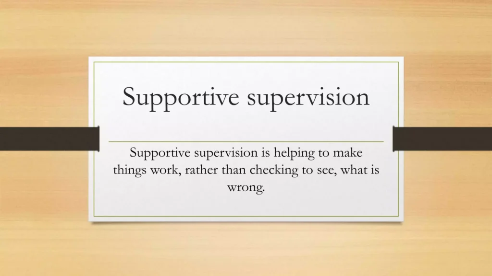
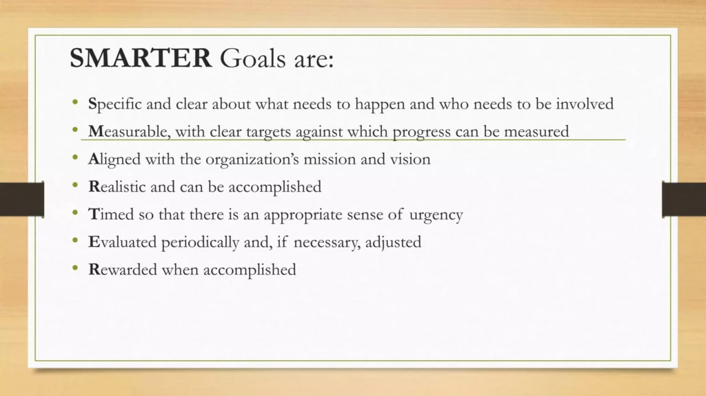

Expanded Nursing Uganda Explanation
Support Supervision should be understood beyond a short definition. Link the concept to patient history, focused assessment, common risks, nursing priorities, documentation and evaluation of outcomes.
01 SUPPORT SUPERVISION
Support supervision is a way of helping people learn and grow in their work. It combines two important elements: support and supervision .
Support means providing someone with the resources and encouragement they need to succeed . This could include things like:
- Training and guidance : Helping someone learn new skills and knowledge.
- Feedback : Providing constructive criticism and praise to help someone improve.
- Encouragement : Boosting someone’s confidence and motivation.
- Resources : Providing access to tools, materials, and information.
Supervision means watching over someone’s work to ensure it is done correctly and safely . or Supervision means overseeing what is being done by a subordinate . This could include things like:
- Monitoring : Keeping track of someone’s progress and performance.
- Providing feedback : Identifying areas where someone needs to improve.
- Taking corrective action : Addressing problems and ensuring they are fixed.
- Ensuring safety : Making sure someone is working in a safe and healthy environment.
Together, support and supervision is a combination for helping people learn, grow, and succeed in their work.
02 Qualities of a Support Supervisor:
1. Knowledge : Possesses a deep understanding of the relevant field and the specific needs of the supervisees and can provide accurate and reliable information to supervisees.
2. Patience : Remains calm and understanding even when faced with challenging situations or difficult supervisees. Avoids getting frustrated or impatient with supervisees.
3. Ability to Listen : Actively listens to supervisees’ concerns, ideas, and feedback. Avoids interrupting or dismissing supervisees’ thoughts.
4. Ability to Motivate : Inspires and encourages supervisees to achieve their goals. Creates a supportive and encouraging environment.
5. Attitude to Learn : Is always open to learning new things and improving their skills. Seeks feedback from supervisees and others to identify areas for improvement.
6. Ability to Teach and Demonstrate : Can effectively communicate knowledge and skills to supervisees. Uses clear and concise language, as well as visual aids when appropriate.
7. Planning Skills : Can effectively plan and organize supervision activities. Sets clear goals and objectives for supervision sessions.
8. Ability to Mobilize : Can effectively gather and utilize resources to support supervisees. Connects supervisees with other professionals or organizations that can provide assistance.
- Empathy : Can understand and relate to the feelings and experiences of supervisees.
- Respect : Treats supervisees with dignity and respect, regardless of their background or experience.
- Professionalism : Maintains professionalism at all times.
- Ethical : Adheres to ethical principles and standards of practice.
- Flexibility : Can adapt their approach to meet the needs of individual supervisees and changing circumstances.
03 Skills of a Support Supervisor:
1. Conceptual Skills : Ability to analyze situations and identify underlying issues. A nurse supervisor analyzes data on patient satisfaction to identify areas where the nursing team can improve.
2. Communication Skills : Effectively communicates with supervisees, colleagues, and other stakeholders. A pharmacy supervisor clearly explains new medication protocols to their team of pharmacy technicians.
3. Human Relations Skills : Builds strong relationships with supervisees based on trust and respect. A physical therapy supervisor mediates a conflict between two physical therapists who have different approaches to treating a patient.
4. Demonstration Skills : Can effectively demonstrate skills and techniques to supervisees. An occupational therapy supervisor demonstrates a new therapeutic technique to their team.
5. Problem Solving Skills : Can identify and analyze problems and develop and implement effective solutions to problems. A pharmacist identifies a potential drug interaction for a patient and works with the doctor to find a safe alternative medication.
6. Technical Skills : Possesses the necessary technical skills and knowledge to provide support to supervisees. A nurse supervisor has technical skills in operating oxygen concentrators.
7. Listening Skills : Actively listens to supervisees’ concerns, ideas, and feedback. Shows genuine interest in what supervisees have to say. A nursing supervisor actively listens to a nurse who is expressing concerns about burnout.
8. Leadership Skills : Inspires and motivates supervisees to achieve their goals. A department supervisor empowers their team to make decisions and solve problems by providing them with the resources and support they need to succeed.
04 Process of Support Supervision.
Planning :
- Develop a supervision plan and schedule for the year.
- Create a budget for the supervision activities.
- Set specific objectives for the year and for each supervision visit.
- Communicate the supervision program to the staff.
- Review previous reports and data to identify areas for improvement.
- Form teams of staff members for specific tasks.
- Prepare logistical arrangements, including transportation, fuel, supplies, and allowances.
- Adopt supervision tools, such as checklists, to facilitate the process.
- Brief the teams on the visit’s objectives and key areas to cover.
Conducting a Supervision Exercise:
- Explain the purpose of the visit to the staff.
- Discuss the overall state of health services in the unit.
- Follow up on issues identified during the previous visit.
- Present tools for observation and assessment, emphasizing their use for improvement, not criticism.
- Allow staff to return to their work while you observe and gather information.
- Identify strengths and weaknesses, analyzing the causes of any weaknesses.
Giving Feedback:
- Express appreciation for everyone’s participation.
- Begin by highlighting the unit’s strengths.
- Discuss areas for improvement, focusing on specific examples.
- Welcome staff comments and suggestions.
- Demonstrate best practices where appropriate.
- Facilitate return demonstrations by staff to reinforce learning.
- Prepare a group report and leave a copy at the unit or summarize it in their support supervision book.
Making a Follow-up:
- Revisit the actions agreed upon during the previous visit.
- Consult with responsible staff members or the unit in-charge to assess progress.
- Identify actions that were not implemented and investigate the reasons.
- Encourage accountability and commitment for the next visit.
- Emphasize that the supervision process is ongoing and requires continuous follow-up.
- Hospital Support Supervision Scenario: Planning : Mary, Head of Supervision plus her team, begins the support supervision process by developing a plan and schedule for the year. She collaborates with relevant stakeholders to create a budget for the supervision activities. They set specific objectives for the year and for each supervision visit. They communicate the supervision program to the hospital staff, emphasizing the importance of their participation. To prepare for the upcoming supervision visit, They review previous reports and data to identify areas for improvement. Mary plus her team form teams of staff members for specific tasks, ensuring that each team is well-equipped to address the identified objectives. Mary also takes care of logistical arrangements, including transportation, fuel, supplies, and allowances for the supervision visit. She adopts supervision tools, such as checklists, to facilitate the process and briefs the teams on the visit’s objectives and key areas to cover. Conducting a Supervision Exercise: On the day of the supervision visit, Mary explains the purpose of the visit to the hospital staff, emphasizing the importance of their involvement in the process. She engages in discussions with the staff to understand the overall state of health services in the unit and follows up on issues identified during the previous visit. Mary presents tools for observation and assessment, emphasizing their use for improvement rather than criticism. She allows the staff to return to their work while she observes and gathers information, identifying strengths and weaknesses and analyzing the causes of any identified weaknesses. Giving Feedback: After the supervision exercise, Mary expresses appreciation for everyone’s participation and begins by highlighting the unit’s strengths. She engages in discussions with the staff, focusing on specific examples to address areas for improvement. Mary welcomes staff comments and suggestions. She facilitates return demonstrations by staff to reinforce learning and prepares a comprehensive group report, leaving a copy at the unit or summarizing it in their support supervision book. Making a Follow-up: Following the supervision visit, Mary revisits the actions agreed upon during the previous visit. She consults with responsible staff members or the unit in-charge to assess progress and identify actions that were not implemented. Mary investigates the reasons for any unimplemented actions and encourages accountability and commitment for the next visit. She emphasizes that the supervision process is ongoing and requires continuous follow-up to ensure sustained improvements in patient care and outcomes.
05 Importance of Support Supervision:
1. Monitoring Service Delivery : Support supervision provides a framework for monitoring the quality of services delivered by healthcare workers. Through regular observations and feedback, supervisors can identify areas where performance can be improved and ensure that patients receive the best possible care.
2. Collecting Data for Planning : Support supervision allows for the collection of data on service delivery, staff performance, and patient outcomes. This data can be used to inform planning and decision-making.
3. Providing On-the-Job Training : Support supervision provides an opportunity for on-the-job training and mentorship. Supervisors can guide and coach staff members, helping them develop their skills and knowledge to deliver high-quality care.
4. Identification of Training Needs : Through regular interactions with staff, supervisors can identify specific training needs and gaps in knowledge. This allows for targeted training programs to be developed and implemented.
5. A Tool for Performance Management : By providing regular feedback and guidance, supervisors can help staff members improve their performance and identify areas where they excel. This contributes to a culture of continuous improvement and professional development.
6. Improving Staff Motivation : By recognizing and appreciating staff members’ contributions, supervisors can create a positive and supportive work environment. This creates a sense of ownership and accountability, leading to increased motivation and job satisfaction.
7. Assessing the Impact of Training : Support supervision provides a mechanism for assessing the impact of training programs on staff performance and patient improvements. By monitoring changes in knowledge, skills, and behaviors following training, supervisors can evaluate the effectiveness of training programs and make necessary adjustments.
8. An Opportunity for Inducting New Employees : Supervisors can provide training, support, and mentorship to new staff members, helping them adapt to their roles and responsibilities effectively. This contributes to a smooth transition.
9. A Basis for Designing Quality Intervention Programs : The information gained through support supervision can inform the design and implementation of quality intervention programs. By identifying areas where service delivery can be improved, supervisors can develop interventions to address specific challenges.
10. A Basis for Resource Allocation : Support supervision provides data on resource utilization and needs. Supervisors can advocate for appropriate resource allocation to ensure that healthcare facilities are adequately equipped to meet the demands of the population.
06 Constraints to Support Supervision:
1. Logistical Problems : Logistical challenges, such as limited time, inadequate resources, and scheduling conflicts, can hinder the effective implementation of support supervision. Supervisors may struggle to find dedicated time for observations, feedback sessions, and follow-up activities. Also, a lack of necessary resources, such as transportation or communication tools, can further complicate the process.
2. Organizational Problems : Organizational factors, such as unclear roles and responsibilities, lack of clear guidelines, and inadequate support from leadership, can create barriers to effective support supervision. When roles and responsibilities are not clearly defined, confusion and inefficiency can arise.
3. Failure to Follow Scheduled Programs : Failure to adhere to scheduled supervision programs can significantly undermine their effectiveness. This can occur due to various reasons, such as staff shortages, unexpected events, or a lack of commitment from supervisors or staff members.
4. Incapacity by Supervisors : Supervisors may lack the necessary skills, knowledge, or experience to effectively conduct support supervision. This can include a lack of understanding of supervision principles, inadequate communication skills, or difficulty providing constructive feedback.
5. Lack of Interest by Both Teams : A lack of interest or motivation from both supervisors and staff members can hinder the effectiveness of support supervision. This can be attributed to factors such as a perceived lack of value in the process, competing priorities, or a negative attitude towards supervision.
6. Lack of Coordination Among Different Actors : Support supervision often involves multiple stakeholders, including supervisors, staff members, and program managers. Lack of coordination among these actors can lead to confusion, duplication of efforts, and inefficiency.
7. Lack of Cooperation by Supervised Staff : Resistance or lack of cooperation from supervised staff can pose a significant challenge. This can be due to various factors, such as fear of criticism, a lack of trust in the supervisor, or a perceived lack of relevance of the feedback provided.
8. Failure to Take Action by Those Concerned : Following supervision sessions, it is important to take concrete actions to address identified issues and implement agreed-upon improvements. Failure to do so can lead to a perception that support supervision is merely a formality, undermining its effectiveness.
9. Tendency to Perceive and Implement as a Routine Activity : Support supervision should not be perceived as a routine activity or a box-ticking exercise. When it becomes routine, it loses its effectiveness and fails to achieve its intended purpose. Supervisors and staff members must actively engage in the process, reflecting on observations, providing meaningful feedback, and continuously seeking improvement.
10. Too Much Expectation from Both Sides : Unrealistic expectations from both supervisors and staff members can set the stage for disappointment and frustration.
07 Nursing Uganda Clinical Lens
Use Support Supervision as a practical nursing topic, not only a memorized definition. Translate theory into safe decisions, accountability, communication and service improvement.
- What to understand first: define support supervision, identify the normal or expected pattern, then explain what changes when the patient is unwell.
- Why it matters in care: the nurse must recognize risk early, explain findings clearly, document accurately and know when to escalate.
- How to revise it: connect each point to assessment, nursing diagnosis or care problem, intervention, rationale and evaluation.
08 Assessment Guide
- The problem, stakeholders, available resources, policy requirements and ethical issues.
- Risks to patients, staff, confidentiality, quality, costs and continuity.
- Documentation, reporting lines, supervision and evaluation measures.
09 Nursing Priorities, Rationales and Outcomes
- Use evidence, policy and professional standards to guide action.
- Communicate clearly, document decisions and protect confidentiality.
- Evaluate whether the action improves safety, learning or service delivery.
The rationale for these priorities is patient safety: nursing actions should prevent deterioration, reduce discomfort, support recovery and create clear evidence for the next caregiver.
- Expected outcome: The plan is documented, realistic, ethical and improves patient care or learning outcomes.
10 Patient Teaching and Revision Check
- Explain support supervision in simple language the patient or caregiver can repeat back.
- Teach warning signs, medicine or follow-up instructions, hygiene or lifestyle points where relevant.
- For exams, prepare a short answer using: definition, causes or risk factors, signs, assessment, management, complications and prevention.
- For ward practice, document baseline findings, actions taken, patient response and the plan for review.
Illustrations and Diagrams (5)




Related Video Lectures
Watch nursing lecture videos on YouTube for this topic. Opens in a new tab.
Watch on YouTubeExternal link: YouTube may use its own cookies and terms. Nursing Uganda is not affiliated with YouTube.